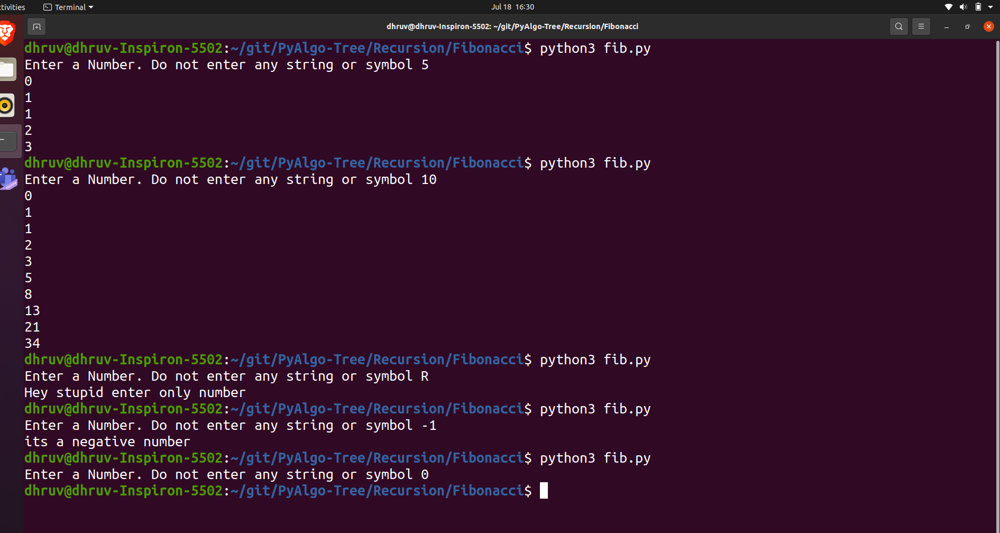

Script Name
To print Fibonacci series till the number n Using Recursion
Aim
To write a program for getting a fibonacci series till input n where the
value of n is defined by the user.
Purpose
To get a understanding about the recursive algorithm.
Short description of package/script
- It is a python program of recursive Algorithm.
-
In this the user give the input which can be any form a number either
positive or negative , a symbol or a string and for each type of input
appropriate message is generated..
Workflow of the Project
-
First a function is there which will take the number as a paramter and
check that the number is either 0 or 1 or more and return appropriate
output .
- Then outside the function user input is taken.
-
Outside the function program will check that the input entered is a
psotive number or negative number or something else.
-
If the input is negative then it will stop the execution by displaying a
messsage that “its a negative number”. If the input is positive then it
will display the fibonacci series else it will
print message that say you should enter only number.
- Run the project by the command “python3 fib.py”.
Detailed explanation of script, if needed
The Fibonacci numbers are the numbers in the following integer sequence.
0, 1, 1, 2, 3, 5, 8, 13, 21, 34, 55, 89, 144, ……..
In mathematical terms, the sequence Fn of Fibonacci numbers is defined by
the recurrence relation Fn = Fn-1 + Fn-2 with seed values F0 = 0 and F1 =
1.
Algorithm
- Create a recursive function that takes a number as its parameter.
-
in the recursive number (in my program Fibonacci is the recursive
function) first it will check that the number is either 0 or 1 , if the
number is zero then it will return 0 and if the number is 1 then it will
return 1 .
-
in other condition it will follow the sequence Fn = Fn-1 + Fn-2 and it
wil terminate till the number is 2.
-
outside the function it will check the given input is positive number or
negative number or something else. if the input is negative number or
some other random symbol or string then function will not be executed in
these case .And if the number is positive number then by using for loop
the complete fibonacci series is printed till the number n.
Output

Author(s)
Dhruv Varshney